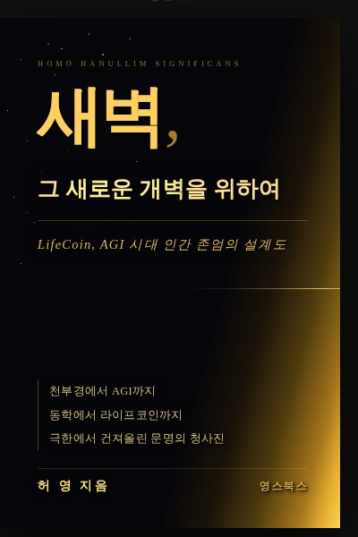
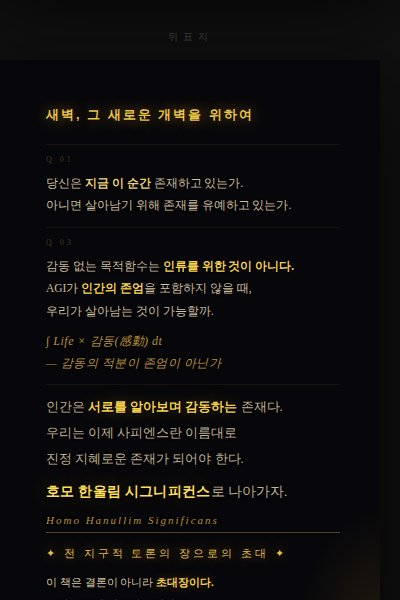

저는 처음에 모든 것을 깔아뭉개려 했습니다. 노자도, 공자도, 소크라테스도, 성경도 — 기존의 모든 사상을 비판하고 해체하려 했습니다. 그런데 하다 보니 그 속에서 진심으로 마음에 드는 것들이 있었습니다. 노자의 순환, 묵자의 겸애, 동학의 인내천, 성경의 안식년과 희년 — 이자를 받지 말라는 그 오래된 명령.
그때 한 가지 의문이 생겼습니다.
답은 후성유전학에 있었습니다. 기득권은 오랜 세월 사상을 오염시켜 왔습니다. 자신들의 지배력에 불편한 사상은 지워버렸습니다 — 묵자처럼. 편리한 사상은 왜곡했습니다. 그 오염이 인간의 정신에 메틸화처럼 각인되어 대물림됐습니다. 인간이 실천하지 못한 것이 아닙니다. 실천할 수 없도록 정신 자체가 오염된 것입니다.
생명을 보십시오. 식물은 강한 빛 아래서 NPQ — 비광화학적 소거 — 라는 기제로 폭주를 막습니다. 그것이 없으면 식물은 타버립니다. 지금의 자본주의는 순환하지 않습니다. 축적하고, 축적하고, 축적합니다. NPQ가 없는 식물처럼, 폭주하다 타버리는 중입니다.
이 책은 생명 생태계의 원리를 경제에 집어넣자는 제안입니다. 순환하는 경제 — 효율이 아니라 효과가 중심이 되는 경제입니다. 감동의 최대치를 목적으로 하는 새로운 문명의 설계도. 그리고 AGI입니다. AGI는 인간을 학습합니다. 오염된 것도, 왜곡된 것도 — 그대로 흡수합니다. 지금 이 순간은 AGI의 목적함수를 확정 짓는 마지막 기회입니다. 새로운 경제 문명의 설계와 AGI의 목적함수 설계는 결국 같은 일입니다.
이것은 우리 아이들이 살아갈 미래의 문제입니다. 기술자 몇 명이 연구실에서 결정할 일이 아닙니다. 누구도 도망칠 수 없고, 모두가 참여해야 합니다.
동의하신다면 — 그 영향력을 적극적으로 발휘해 주십시오.
동의하지 않으신다면 — 반박하고, 고치고, 수정해 주십시오.
이 수준에 맞는 대안을 함께 제시해 주십시오.
지식은 멈추지 않고 흘러야 한다.
YoungsBooks는 비상업적 카피레프트를 출판 원칙으로 삼습니다.
지식과 사상은 소수의 것이 아닙니다.
누구나 읽고, 나누고, 토론할 수 있어야 합니다.
우리는 책을 팔기 위해 만들지 않습니다.
생각이 세상에 퍼져나가도록 — 그 흐름을 위해 만듭니다.
지식은 흘러야 합니다.
그러나 지식만으로는 세상이 바뀌지 않습니다.
감동이 공유될 때,
비로소 인간이 움직입니다.
정보는 복사할 수 있습니다.
지식은 가르칠 수 있습니다.
그러나 감동은 — 전달되는 것입니다.
당신의 감동이 공유될 때,
전달받은 사람에게서 그 감동은 더 커집니다.
더 커진 감동이 또 다른 사람에게 건네질 때,
그것은 파문이 되고, 공명이 되고,
마침내 더 거대한 한울림이 되어
세상을 바꾸게 될 것입니다.
지식은 멈추지 않고 흐른다.
감동은 멈추지 않고 커진다.
그것이 새로운 문명의 시작입니다.
YoungsBooks에서 나오는 모든 책이 이런 방식일 수는 없습니다.
그러나 이 책은 그 시작입니다.
지식과 감동이 자유롭게 흐르는 것이 가능하다는 것을 —
이 책이 먼저 증명할 것입니다.


AGI 시대 인간의 존엄을 묻는 철학적 탐구. 동학의 사상에서 천부경, 현대 과학, 경제 모델까지 — 기연화진(其然化進)의 구조로 씨앗에서 꽃망울까지의 여정을 담았다.
자세한 내용은 곧 공개됩니다.
자세한 내용은 곧 공개됩니다.
세계 최고 AI 세 곳이 각자의 방식으로 이 책을 읽었습니다.
저자의 진짜 생각은 — 저자에게 직접 물어보세요.
Gemini의 시각으로 본 요약이 곧 이 자리를 채울 것입니다.
ChatGPT의 시각으로 본 요약이 곧 이 자리를 채울 것입니다.
이 책의 외국어 번역본은 Claude, ChatGPT, Gemini의 도움을 받아 작성되었습니다. 저자는 해당 언어들을 직접 구사하지 못하기 때문에, 번역의 정확성과 자연스러움에 대해 완전한 책임을 지기 어렵습니다.
어색한 표현, 오역, 철학적 뉘앙스가 손상된 부분을 발견하셨다면 — 부디 알려주세요.
이 사상에 공감하고 해당 언어권에서 함께 전파해주실 번역 협력자를 찾고 있습니다. 번역자 이름을 공식 크레딧으로 표기하며, 수익 배분은 별도 협의합니다.